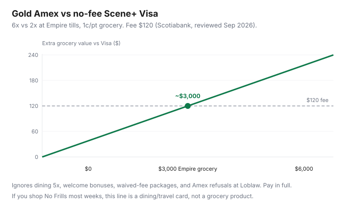

Food & Groceries · Canada
Scotiabank Gold Amex for Sobeys/FreshCo: grocery earn math and acceptance limits
Six Scene+ points per dollar at Sobeys looks like a 6% grocery card until you price the $120 annual fee, the Amex-shaped hole at No Frills, and the fact that FreshCo shelves are already cheaper than full-service Sobeys. High earn is a multiplier on the store you should shop — not a reason to shop the wrong store.
This is Empire-and-Scene+ math for Canadian households: Gold American Express versus a no-fee Scene+ Visa, with Amex Cobalt as the travel-currency alternative. It is a worksheet, not an application. Pay in full or the purchase APR erases every point.
Disclosure: Scotiabank Gold American Express, Scene+ Visa, and American Express Cobalt are offer types. Saving Optimizer may earn a commission if we later add partner links. We do not currently claim Scotiabank, Scene+, or Amex partnerships. Fees, caps, welcome offers, and participating-store lists change. Read the issuer page. This is not credit advice.
Key takeaways
- Published earn: 6 Scene+/ $1 at listed Empire grocers; 5× other eligible grocery, dining, entertainment; 3× gas, transit, select streaming; 1× else (Scotiabank page reviewed Sep 2026).
- Fee: $120 primary (may be waived with an eligible Scotiabank package). Supplementary cards $29.
- 1,000 Scene+ = $10 groceries ≈ 1¢ a point, so 6× is a 6% headline before the fee and only where Amex works.
- Break-even vs a 2× no-fee Scene+ Visa is about $3,000 of eligible Empire grocery if grocery extra earn is the only difference.
- Loblaw and Walmart tills often decline Amex. Do not buy this card for a No Frills life.
Scene+ earn at Empire banners
Scotiabank’s Gold American Express page lists 6 points per $1 at Sobeys, IGA, Safeway, Foodland, FreshCo, Voilà by Sobeys/IGA/Safeway, Chalo! FreshCo, Thrifty Foods, IGA West, Les Marchés Tradition, Rachelle Béry, and Co-op locations — “list may change.” Five points per $1 on other eligible grocery, dining, food delivery, food subscriptions, and entertainment. Three points on gas, public transit, rideshare, and select streaming. Accelerated rates are described as applying up to a combined annual threshold (issuer materials commonly cite $50,000 of accelerated spend, then 1× — confirm the current certificate).
Free Scene+ members still need to load weekly and personalized offers at FreshCo and Sobeys. The card does not replace the app. FreshCo generally has no base grocery points without offers. Details in Scene+ for free groceries.
Annual fee break-even scenarios
At 1¢ per Scene+ point, Gold Amex grocery at Empire is ~6%. A no-fee Scene+ Visa at 2× is ~2%. Extra earn = 4 percentage points. $120 ÷ 0.04 = $3,000 of eligible Empire grocery to cover the fee on grocery extra alone.

| Eligible Empire grocery | Extra vs 2× Visa | Minus $120 fee |
|---|---|---|
| $1,500 | $60 | −$60 |
| $3,000 | $120 | $0 |
| $6,000 | $240 | +$120 |
| $9,000 | $360 | +$240 |
If Scotiabank waives the fee on your Ultimate-style package, the grocery extra is gravy — still only at Empire tills that take Amex. If you would not keep that bank package otherwise, do not launder a $30/month account fee into “free Gold Amex.”
Amex acceptance gaps elsewhere in your life
As of 2026 shopper reports and our banner card guide (verify at your till):
- Works often: Sobeys, Safeway, FreshCo, IGA, Metro, many restaurants, most travel.
- Fails often: No Frills, Superstore, many Loblaws, Walmart Canada, Costco warehouse (Mastercard only), some small independents.
- Mixed: Shoppers Drug Mart, some farm stores, some delivery apps.
If half your calories come from No Frills, Gold Amex is a dining/travel card that naps in the grocery envelope. Carry a Visa or Mastercard for the discounter. Two pieces of plastic is normal. Shopping Superstore “so the Amex works” is how people donate 10–15% on staples to earn 6% on a subset.
Points-over-price trap: $22 extra at Sobeys to farm 6% is $1.32 of points. You funded a $22 problem. Shop FreshCo; tap the card there if they take it.
Comparing to no-fee Scene+ Visa
Scotiabank’s Scene+ Visa earn (public pages reviewed Sep 2026) is typically 2 points per $1 at the same Empire grocery list, with no annual fee and Visa’s wider acceptance — including many places Gold Amex will not go. For a household spending $200 a month at FreshCo, extra Gold Amex grocery value is about $96 a year before the fee — not enough. For $500 a month strictly at Empire, extra is about $240, which clears $120 with room, if Amex is accepted every trip and you pay in full.
Visa also survives a split shop: tap Visa at Walmart, tap Gold Amex at Sobeys if you insist on both. Most people should pick one discounter family and one card.
Cobalt alternative for flexible grocery codes
American Express Cobalt is a Membership Rewards card with a strong grocery and dining multiplier (commonly 5× on eligible grocery, with a monthly fee — confirm on Amex). MR can be worth more than 1¢ if you transfer to travel partners you already use. It will not print $10 off at FreshCo. Gold Amex prints Scene+ you can burn at the Empire till. Cobalt prints travel currency. If you never fly, Gold’s grocery redemption is the simpler story. If you already run an Amex travel system and Empire takes Amex, Cobalt may be the better currency even when Gold is the better grocery till product. Run both numbers; carry one fee.
Responsible redemption planning
- Pay the statement in full. Autopay from chequing that already holds the grocery float.
- Load Scene+ offers every week. Card earn stacks on eligible spend; unloaded offers are still unloaded.
- Redeem 1,000-point ($10) chunks when they change this week’s bill. Do not hoard 80,000 points for a feeling.
- Revisit the fee at month 11. If Empire spend dropped or you moved to No Frills, downgrade to the Visa rather than “hoping 6× still works.”
- Never carry a balance for a welcome bonus. A 20% APR on $3,000 for two months is not a 50,000-point story.
Put this beside maximum rewards without debt. The Gold Amex is a sharp tool for Empire-heavy, Amex-friendly, pay-in-full households. It is a blunt object for everyone else.
Sources & date stamps
- Scotiabank Gold American Express product page: $120 fee, 6×/5×/3×/1× earn, Empire grocer list, supplementary $29 (reviewed 16 Sep 2026).
- Scotiabank Scene+ Visa public earn at Empire banners (2×) reviewed Sep 2026.
- Sobeys / FreshCo Scene+ program pages: 1,000 points = $10; FreshCo no base points.
- Issuer/review notes on accelerated-earn caps (commonly $50,000/year) — confirm the live rewards terms before you rely on uncapped 6×.
Frequently asked questions
How many Scene+ points does the Gold Amex earn at Sobeys?
Scotiabank’s public card page (reviewed Sep 2026) awards 6 Scene+ points per $1 at listed Empire grocers including Sobeys, IGA, Safeway, Foodland, FreshCo, Voilà, Chalo! FreshCo, Thrifty Foods, and related banners. The list can change. Accelerated rates are described with an annual spend threshold on some categories.
What is the annual fee?
The current published primary-card fee is $120 per year ($29 per supplementary card). Scotiabank states it can be waived with an eligible bank account / package. Confirm the live page before you treat $0 as your fee.
Will this card work at No Frills or Walmart?
Often no. Many Loblaw grocery banners and Walmart Canada do not take American Express. Costco warehouses are Mastercard-only. A 6× headline at a till that refuses the plastic is 0%.
Is the no-fee Scene+ Visa better?
For modest Empire spend, often yes: 2 points per $1 at the same grocer list, Visa acceptance, no $120 hurdle. Gold Amex needs enough extra 4% (and dining/entertainment 5×) to clear the fee after you pay in full.
How does Amex Cobalt compare?
Cobalt pays Membership Rewards, not Scene+, typically with a strong grocery/dining multiplier and a monthly fee. Burn MR on travel you already take. Burn Scene+ at the grocery till. Choose the currency you will use. This is not an application recommendation.